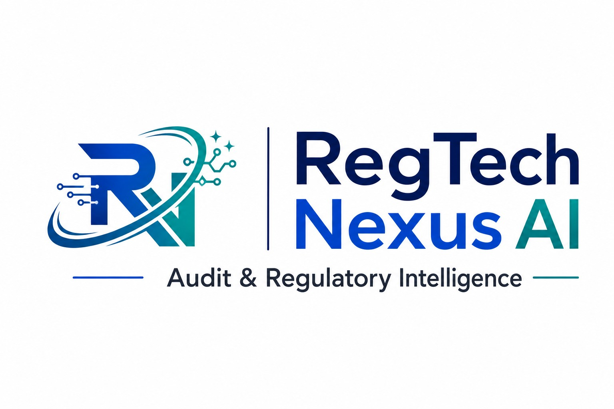

Choose the route
Select Singapore, UAE mainland/VARA or DIFC/DFSA, or Australia. ADGM/FSRA remains a separate route.

Start assessment ↗Choose a country or jurisdiction, trace each control to its public source, record the evidence you can show, and receive a gate-based decision signal with lane-level coverage and next actions. Singapore, UAE and Australia are available now; more country routes can be added to the same workflow.
Do not enter customer names, account numbers, transaction details, personal data or confidential documents. This is an independent browser-based review aid. It is not produced, approved, endorsed, authorised or certified by MAS, VARA, DFSA, CBUAE, AUSTRAC, APRA, ASIC or any government authority.
Each answer updates a traceable control row. The primary result is a decision gate; lane coverage is shown only as supporting context.
Select Singapore, UAE mainland/VARA or DIFC/DFSA, or Australia. ADGM/FSRA remains a separate route.
For each control test, select Meets, Partial, Does not meet, Not assessed or Not applicable. Record only non-sensitive references.
Press Assess this matrix after completing every applicable status. The control result, risk gate and action then appear together.
Use the gaps, lane signals and official source links in your internal review. Results remain in this browser unless you export them.
These short definitions help first-time users read the source matrix. They are orientation only; the linked primary sources remain the authority for scope and interpretation.
Moving or disguising value through trade by manipulating price, quantity, description, documents or counterparties.
Funding the development, acquisition or transfer of weapons of mass destruction or related delivery systems.
Identifying and verifying the customer and beneficial owner, understanding the relationship and applying ongoing review where required.
Fairness, Ethics, Accountability and Transparency—the four principles used in the MAS responsible-AI reference path.
Singapore’s secure financial-crime information-sharing platform and related public reference materials; this tool is not a replacement for it.
Scope note: This page uses regulator and law names only to identify public source paths. It is not produced, approved, endorsed, authorised or certified by any named authority.
The coverage indicator is secondary. The primary result is a source-derived control gate, with a separate lane view so a strong area cannot hide a material gap elsewhere.
These calculations are an independent review method derived from the source-to-control matrix below. They are not percentages prescribed by a regulator.
Trace AI governance, AML/CFT, beneficial ownership, trade-risk escalation and controlled information-sharing evidence to their public source paths.
Source rows identify the public reference; control tests state the question; evidence tests state what can be shown; result and risk are outputs.
Illustrative only: ownership refresh is incomplete, while AI governance and information-sharing evidence are available. No customer data is used.
Evidence to look for: inventory, owner, decision purpose, affected people, risk classification and override path.
Evidence to look for: data-quality checks, fairness review, explainability, override/escalation path and post-change monitoring.
Evidence to look for: vendor register, cloud responsibilities, change control, incident process, service-level expectations and review dates.
Evidence to look for: approved risk assessment, ownership/control map, verification source, refresh trigger and escalation for opaque structures.
Evidence to look for: trade-document review, red-flag library, escalation threshold, case rationale and human decision owner.
Evidence to look for: confidentiality rules, access approval, referral rationale, safeguards, retention and audit trail.
Control-level results are shown in the matrix above.
Indicative review support only. This is not a compliance rating, filing decision or regulatory conclusion. CSV, PDF, print and email actions appear only after a completed assessment; data stays in your browser.
Start by selecting the correct route. CBUAE/onshore, Dubai/VARA and DIFC/DFSA are not interchangeable; ADGM/FSRA is in Abu Dhabi and remains separate.
Source rows identify the public reference; control tests state the question; evidence tests state what can be shown; the route gate is assessed separately.
Illustrative only: the perimeter and AML controls are partly evidenced, but trade-document review is missing. No wallet or customer data is used.
Evidence to look for: location, licence, regulated activity, delivery channel and the selected CBUAE/VARA or DFSA path.
Evidence to look for: customer-risk method, beneficial ownership, PEP/sanctions screening, source of funds and escalation records.
Evidence to look for: VA risk assessment, wallet/counterparty review, Travel Rule data, VASP due diligence and analytics testing.
Evidence to look for: trade documents, goods/value consistency, counterparties, free-zone exposure and escalation for unusual routes.
Evidence to look for: token assessment, approval rationale, custody/platform controls, vendor register, incidents and exit considerations.
Evidence to look for: internal escalation, decision rationale, reporting responsibility, review quality and record retention.
Control-level results are shown in the matrix above.
Indicative review support only. This is not a compliance rating, filing decision or regulatory conclusion. CSV, PDF, print and email actions appear only after a completed assessment; data stays in your browser.
Keep the AML/CTF transition lane separate from the operational-resilience lane so one result cannot hide a material gap in the other.
Source rows identify the public reference; control tests state the question; evidence tests state what can be shown; AUSTRAC and APRA remain separate lanes.
Illustrative only: the AML/CTF program is partial, reporting evidence is missing and CPS 230 provider-exit evidence is still open. No institutional data is used.
Evidence to look for: entity classification, designated service, registration, accountable owner and transition stage.
Evidence to look for: risk assessment, program, initial CDD, ongoing CDD, enhanced measures, transition class and review cadence.
Evidence to look for: SMR/TTR workflow, Travel Rule applicability, filing deadline control, quality review and retention.
Evidence to look for: independent evaluation, training completion, scenario testing, issue log and remediation owner.
Evidence to look for: critical operations, disruption and data-loss tolerances, scenario tests, recovery evidence and reporting.
Evidence to look for: provider register, contract controls, fourth-party dependency, incident history, concentration and exit strategy.
Control-level results are shown in the matrix above.
Indicative review support only. This is not a compliance rating, filing decision or regulatory conclusion. CSV, PDF, print and email actions appear only after a completed assessment; data stays in your browser.
This page is for early-stage review, training, workshop preparation and evidence-gap discussion. A bank or regulated institution would need its own approved methodology, current source validation, authorised access, secure evidence handling, audit trail and qualified human review before relying on an output.
These links are starting points for source verification. Regulatory content, effective dates and scope can change.
Last reviewed: 27 September 2026 · Independent review-support tool · Not official regulatory instruction.